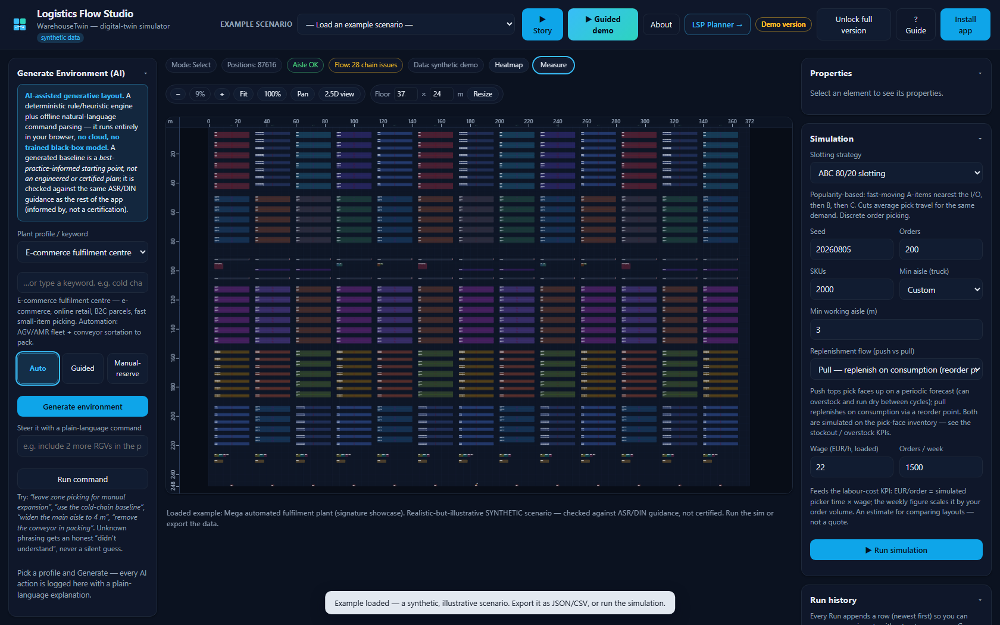

I build the seam between prediction and decision: agentic & low-code automation on one side, BI / forecasting / optimization on the other - each project shipped with a fair baseline, an honest evaluation, and a working offline artifact.
Featured work
One arc through the work: prediction -> decision -> operation -> proof. Synthetic/generated data unless a real public dataset is named; results are modelled, not measured; standards are informed by ISO/DIN, not a certification.

01Showpiece
WarehouseTwin (logistics-flow-studio)
You can operate it. An interactive plant + warehouse simulator that runs in a browser, offline, on a normal laptop: generate a plant from a keyword, edit it in plain language, switch 2D <-> 3D, and watch material flow receiving -> put-away -> pick -> pack -> ship. The emotional entry point - a real operation with racks, vehicles and dock doors.
There is a real engine underneath - not a toy. The reference engine that backs the simulator: 3D carton packing, ABC / golden-zone slotting and a discrete-event simulation, tested (128 tests) and sharing the exact same wt-1 layout format the app uses. The pretty picture is a faithful front-end to real operations research.
The whole chain reconciles on real data - the hard proof. It takes ONE real dataset (UCI Online Retail II) and runs it through every stage - forecast -> inventory -> slotting -> fulfilment -> routing -> a single reconciled ledger - with 13 cross-stage identities machine-checked to hold, even under demand or cost shocks. The thing no single-silo demo can show: the functions actually agree with each other.
It scales into a command center - the operator's view. A Flask dashboard that turns the engines into a decision cockpit - forecasting, assortment, routing - with a reconciliation guard so no headline number can silently drift from the code that produced it. What a Wuerth-style MRO distributor would actually sit in front of.
Filter by focus area. 19 projects across analytics, automation, logistics, applied ML and research.
revops-optimizer
Analytics (Job #2)
Analytics & BI
A predict-to-optimize revenue engine: forecast, elasticity and decline-risk feed four optimizers into one prescriptive plan with a single euro uplift number.
~EUR 160k / yrModelled margin uplift
0.75 (beats naive)Forecast MASE
0.99Decline-risk ROC-AUC
240 SKUs, 8 categoriesDataset
The predict-to-optimize seam is the whole project: forecast replaces the raw average in the newsvendor and assortment MILP; estimated elasticity drives pricing; decline probability haircuts fragile SKUs.
Ships a Power BI star schema with real DAX, an executive PDF/PPTX deck, a styled Excel workbook, and a dependency-free offline web dashboard with a what-if slider.
Honest about the MILP-vs-greedy gap: it only opens up when a second (shelf) constraint binds.
PythonNumPySciPyMILPPower BI / DAXmatplotlibopenpyxl
24 months of B2B wholesale orders turned into the QBR leadership actually acts on: KPIs, margin bridge, ABC-XYZ, RFM, out-of-sample forecast and a replenishment buy-list.
EUR 21.8MDistributor revenue modelled
EUR 2.6M / yrDiscount-leakage lever found
pure stdlib (no pandas/numpy)Analytics core
rolling-origin CV, MASEForecast evaluation
Analytics core is pure Python standard library on purpose: MASE, Croston's method and Holt-Winters written from scratch to actually understand them.
A SQL-vs-Python cross-check asserts the revenue rollup equal to the cent, so the two engines cannot silently drift.
Honest that the 24-month series makes seasonal-naive a brutally strong baseline; the point is the honest evaluation, not a hero number.
The MRO command center: describe, forecast, and optimize price/assortment/routing behind one API and one dashboard, rolled into a single annual euro uplift.
EUR 136,972 (4.2% of GM)Expected annual uplift
0.38 over 9 rolling foldsForecast MASE
140 km / 25% per runRouting saving
EUR 4.79MRevenue modelled (24 mo)
Every prescriptive engine ships next to a fair baseline so the lift is always quantified (MILP vs greedy, elasticity pricing vs status quo, CVRP vs nearest-neighbour).
Flask caches every expensive computation at boot; only the parameterised optimisers recompute per request.
Honest that the assortment MILP only edges greedy by ~EUR 1k here, and that OTIF is a modelled proxy, not observed service data.
Last-mile CVRP: how much does a real optimizer beat the heuristic a dispatcher reaches for by hand? Clarke-Wright savings vs Google OR-Tools, measured.
-4.6% distanceOR-Tools vs Clarke-Wright
-31% distanceOR-Tools vs naive sweep
60 customers, capacity-50 vansInstance
~8 s on CPUSolve time
Baseline is the classic 1964 Clarke-Wright savings algorithm written from scratch; the optimizer is OR-Tools CVRP with guided local search.
Honest headline: ~5% over an already-good baseline, and on the 100-customer instance the gap shrinks to ~1% - shown rather than hidden.
Interactive offline Canvas map: depot, customers and coloured routes with a savings-heuristic overlay toggle.
The same RFQ-intake agent built low-code (n8n) and full-code, driving identical tool logic, then scored on nine dimensions so the trade-off is measured not asserted.
~EUR 625k / yrModelled time returned
4.44 / 5Scorecard (full-code)
3.33 / 5Scorecard (n8n)
2.33 / 5Scorecard (Power Automate)
A from-scratch, provider-agnostic tool-use loop (mock or Claude) parses an RFQ email, resolves SKUs, checks stock and drafts a quote - number of tool calls varies per email, which is what makes it genuinely agentic.
Full-code and n8n drive the exact same tool functions (imported vs called over HTTP), so it is one logic compared two ways, not two implementations.
Honest that only runtime figures are measured; the 1-5 ratings are reasoned judgements with cited sources.
A tiny visual agent-workflow builder that runs entirely in the browser: drag nodes, wire ports, hit Run, watch a mock agent walk the graph and pick tools.
A real topological sort (Kahn's algorithm) with cycle detection walks the DAG, highlights each node, lights live wires and streams a trace; the same engine.js runs in the browser and the test suite.
Every connection is a hand-drawn SVG path re-attached as nodes move; a Condition node prunes the dead branch.
Small enough to read in one sitting; deliberately not competing with n8n on features.
Unstructured business document in, structured record out: a five-stage pipeline that pulls header, line items and cross-checked totals with a confidence gate.
~EUR 110k / yrModelled AP capacity freed
~4 min to under 1 sPer-document handling
~60k documents / yrScenario
stdlib only, no API keyDependencies
Totals are cross-checked against summed line items; only documents that reconcile and clear a confidence gate post automatically, the rest route to a human.
Two real parsing bugs (VAT amount vs percentage, Subtotal read as Total) are now pinned by regression tests; number parsing handles both EU and US decimal conventions.
Built around an LLMProvider interface: set DOCEXTRACT_PROVIDER=anthropic and each stage routes through a real model while the trace/confidence/validation logic stays put.
Which back-office process to automate first, with the math shown: hours saved, euros saved, payback and 3-year ROI, ranked so budget follows value not volume.
A small honest study: circuits copied from real animal brains can be more efficient than conventional methods on narrow tasks. FlyHash vs LSH, and a liquid CfC cell vs a GRU.
0.614 vs LSH 0.419FlyHash precision@10 (128 bits)
0.152 vs LSH 0.017FlyHash precision@10 (4 bits)
3,233 vs GRU 3,393Liquid CfC params
0.0142 vs GRU 0.0147CfC clean MSE
Reproduces the fruit-fly odour-hashing trick (Dasgupta, Stevens & Navlakha, Science 2017) and runs the fair equal-budget comparison on real MNIST across 3 seeds; FlyHash wins at every hash length.
A from-scratch ~32-neuron closed-form continuous-time (CfC) liquid cell matches or beats a parameter-heavier GRU under input noise.
Careful about what it does NOT claim: not beating the brain, not beating HNSW/FAISS, not beating a well-tuned RNN in general - narrow, measured claims only.
Five small models that train locally in seconds: each takes a published method, adds one principled improvement for a B2B distributor use case, and evaluates with the metric that survives imbalance and short series.
MASE / macro-F1 / PR-AUC (not accuracy)Recurring metric
seconds-to-minutes on laptop CPU/GPUTraining
PyTorch + numpy onlyDependencies
The defensible thread across all five: implement the core from scratch, add one principled improvement, evaluate with a metric that survives class imbalance and zeros.
Examples: a DeepAR-lite global forecaster with a negative-binomial head for intermittent SKUs; a fastText-core text classifier with regex sub-token splitting for unseen part numbers.
Every spec is grounded in cited literature (DeepAR, N-BEATS, fastText, focal loss, ridge/lasso), deliberately the smallest credible version of each method.
The full predictive-maintenance loop: watch machine sensors, flag drifting machines with two honestly compared detectors, rank urgency, then CP-SAT-schedule scarce crews against a named FIFO baseline.
PCA 0.937 vs AE 0.921Detection ROC-AUC
10/10 (mean delay 3.4 days)Faulty machines caught
778 vs 1013 (-23.2%)CP-SAT vs FIFO weighted delay
proven OPTIMAL by the solverSchedule optimality
Two detectors trained on healthy-only windows and compared honestly: a numpy PCA-SVD baseline and a small PyTorch autoencoder. The policy was fixed before measuring - recommend the simpler detector unless the other wins by more than 0.03 PR-AUC. The AE lost by 0.017, so PCA is the recommendation.
CP-SAT turns the urgency list into a 2-crew, 4-day schedule and proves it OPTIMAL: total weighted delay 778 vs 1013 for the FIFO baseline, a 23.2% reduction.
The 0-100 health index is labelled a heuristic degradation score, not a remaining-useful-life prediction; a leakage test rebuilds features on truncated data and asserts they are identical.
The model's score is not the product - the decisions are: from-scratch logistic regression, Platt calibration, a cost-swept alert threshold and a constrained analyst review queue, each measured against honest baselines.
0.270 vs 0.034 rule baselinePR-AUC (test)
0.40 at 1.4% prevalencePrecision@100
0.366 -> 0.003 after PlattCalibration ECE
-43.3% (assumed costs)Cost vs naive 0.5 threshold
Everything statistical is from scratch in NumPy - logistic regression, focal loss, Platt scaling, PR-AUC/ROC-AUC/Brier/ECE - unit-tested down to a finite-difference gradient check; the generator's own probabilities give an oracle ceiling (PR-AUC 0.367) reported next to the model's 0.270.
Calibration is the hinge: raw ECE 0.366 falls to 0.003 after Platt, which is what lets the cost-swept threshold (t* = 0.047, 43.3% cheaper than the 0.5 default under stated assumptions) and the HiGHS review-queue optimizer consume the probabilities.
Honest that without coverage floors the LP's optimum is exactly top-K by p x amount - verified numerically on every run; the solver earns its keep only when every merchant segment must stay watched (0.6% expected value given up to watch all 8).
Forecast a plant's hourly load a day ahead with honest rolling-origin CV, then dispatch a battery against the monthly demand-charge peak with a hand-assembled linear program - the timer baseline saves exactly EUR 0.
0.497 (naive 1.369), 14/14 folds wonForecast MASE
4.8%Day-ahead MAPE
77.1 kW / 20.9% mean monthlyPeak reduction (battery LP)
~EUR 11,100/yr at an assumed tariffModelled saving
Written out from scratch on numpy/scipy/pandas: Holt-Winters as ~30 lines of recursions, the regression as numpy.linalg.lstsq, and the peak-shaving LP as a hand-assembled constraint matrix for HiGHS.
Reports its own losses: Holt-Winters (MASE 3.040) loses to the seasonal-naive baseline and the README says so; the single Boxing Day fold that inflates the naive's mean (MASE 8.40) is unpacked rather than averaged away.
The fixed evening-timer baseline saves EUR 0 on this mid-morning-peaking site - when to discharge is the entire product - and the LP's perfect month-ahead foresight is flagged as an upper bound, with the EUR 12/kW-month tariff labelled an assumption.
At what point does the neural network beat the boring methods? Three surface-defect detectors on synthetic textures, one shared scoring rule fixed in advance, and a pre-stated complexity rule that picks the winner.
AE 0.779 vs PCA 0.772Best ROC-AUC
PCA (pre-stated 0.02 rule)Recommended method
PCA 0.407 vs AE 0.393TPR @ 5% FPR
600 clean train / 300 test, 64x64Dataset
One shared image-level scoring rule (mean of the hottest 2% of heatmap pixels) fixed before any results, and a pre-stated recommendation rule: the simplest method within 0.02 ROC-AUC of the best wins - so PCA reconstruction beats the 0.007-ahead autoencoder.
Unexpected finding, reported: training the autoencoder longer made it worse (overall AUC 0.779 -> 0.738 at 30 epochs, blob detection 0.828 -> 0.610) because good reconstruction erases the anomaly signal.
Texture-breaks split the field: the autoencoder is the only method meaningfully above chance on them (0.609) and nobody can localize them (best mean IoU 0.043 vs 0.011 for random heatmaps); ROC/PR/IoU are implemented from scratch in numpy, no scikit-learn anywhere.
An installable, offline-first web app that teaches one- and two-qubit quantum computing on a real hand-written simulator - and says out loud what quantum computers cannot do.
~300 lines, zero dependenciesSimulator
42 (plain Node)Physics assertions
57 (tools/verify.mjs)Structural / offline checks
0 - installable PWARuntime network calls
A hand-written state-vector simulator (sim.js, ~300 lines of pure functions): complex arithmetic, H/X/Y/Z/S/T gates, RX/RY/RZ rotations, CNOT, Born-rule measurement with a seeded PRNG, and an explicit non-factorability entanglement check.
The two-qubit Bloch view draws each qubit's reduced state, so both arrows visibly collapse to the centre of the sphere when a CNOT entangles the qubits.
Refuses to hype: a 'What quantum computers are NOT' section covers the parallel-worlds myth, NISQ-era limits, decoherence and error-correction overhead - every physics claim is demonstrated live on the simulator or cited to a real source.
Vanilla JSCanvasPWA / service workerNode test harnesszero dependencies
WarehouseTwin - WMS + Plant Simulator (v2.0.0): an offline, browser-based warehouse management system and plant simulator. Generate a plant from a keyword (a deterministic generator plus an offline natural-language command parser, not a trained model), then simulate the WMS operation (receiving -> put-away -> replenishment -> picking -> packing -> shipping) with ISO 22400-grounded KPIs, a live animated material flow, and 29 equipment types each with a 2D and a 3D representation (press P to switch) rendered in detail down to rack pallets, floor markings and metre rulers. Storage/slotting, automation, a user-definable object library, a guided Story Mode tour, an editable standards knowledge base and a consolidated WMS report; runs fully offline. Synthetic unless you import your own CSV; informed by standards, not a certification.
AI environment generator: describe a plant in keywords and a transparent, deterministic procedural generator builds a full valid layout (RGV/AGV, AS/RS, conveyor), then an offline natural-language parser applies plain-language edits like 'include 2 more RGVs in the picking sector' - a rule/heuristic engine, not a trained black-box model, and unknown phrasing gets an honest 'didn't understand'.
WMS operations simulation over the layout you drew (receiving -> put-away -> replenishment -> picking -> packing -> shipping) with ISO 22400-grounded KPIs and the bottleneck stage named, a live animated material flow (boxes through stations, conveyor-path routing, emergent queue congestion) and a live KPI dashboard - all seeded and deterministic, so the same seed reproduces the same result.
Detailed twin rendering: every one of 29 equipment types carries both a 2D schematic and a 3D representation you flip between with the P key, and the floor plan is drawn down to individual rack pallets, aisle floor markings and metre rulers - zoom and pan the whole hall on a single canvas.
Run it on your own data: a first-class SKU master + order pool with CSV import/export and row-numbered validation; golden-zone storage slotting, occupancy and retrieval; and an editable standards knowledge base where you change the DIN/ASR/EN/VDI/ISO values the compliance check, advisor and generator reason over. The pinned golden-zone optimizer still cuts demo pick travel 36.70 -> 18.85 m/order (-48.6%), reproducible headlessly.
Honest throughout: every figure is synthetic and seeded unless you import your own data, the standards work is 'informed by, not a certification', and the app makes zero network calls - it runs locally via a static server or installs as a PWA. Outputs a consolidated printable WMS Report plus JSON/CSV and a scoped IFC4 export; 35 headless verification harnesses plus a 57/57 in-browser self-test back the documented behaviour.
Vanilla JSHTML5 Canvas2D + 3D renderingPWA / service workerNode verify harnessBubblewrap TWA scaffold
One real dataset through the whole distributor decision chain - clean, forecast, replenish, slot, pick, route, cost - with a reconciliation ledger that machine-checks every seam and reproduces revenue across two repositories to the penny.
GBP 19,643,861.62 - to the pennyCross-repo revenue match
UCI Online Retail II, 1,067,371 raw rowsReal dataset
110 (each identity has a corruption FAIL path)Tests
Distributors fail at the seams, not inside silos - so stage 6 is the product: a reconciliation ledger of 13 pytest-able identity checks that print both numbers, from cleaned revenue reproduced across two repositories to the penny (GBP 19,643,861.62) and the cost ledger summing to the cent, down to every pick (256,787 lines), carton (70,820) and route drop (4,151) conserved.
Honest findings kept in the headline: nothing beats the naive walk on lumpy demand (MASE 1.782); the exact Hungarian slotting optimum is worth only 1.6% over classic ABC, with the rearrangement-inequality math explaining why; OR-Tools CVRP beats the 1964 Clarke-Wright baseline by only 0.2% and loses 19 of 48 days; the synthetic picking crew is 18% utilized - measured, not tuned away.
Measuring is split from presenting: the ~51-minute full run (48 per-day CVRPs) serializes to a committed, code-fingerprinted run artifact; the offline Flask CHAIN DASHBOARD (13-identity reconciliation panel, provenance-colored stage flow) boots from it in seconds and recomputes nothing; PDF + Excel deliverables regenerate from the same artifact byte-for-byte; every quantity carries a provenance tag (real | derived | synthetic-assigned), invented cost rates are labelled INVENTED, and the cost table makes no profit claims.
The portfolio's engines as AI-callable tools: a standard-conformant MCP server exposing forecasting, slotting, packing, routing, leakage analytics and a repo auditor to Claude Desktop / Claude Code over the open Model Context Protocol.
6, from 5 source reposReal engines exposed as tools
20, incl. a live JSON-RPC handshakeTests
structured results - the server never crashes on a tool callError handling
per-tool data_note (synthetic seeded vs real UCI)Honesty labels
Six real engines - per-demand-class forecasting (decision-chain), exact Hungarian slotting and FFD carton packing (logistics-digital-twin), deterministic-limit CVRP vs Clarke-Wright (route-optimizer), discount-leakage drill-down (sales-kpi-analytics), and a read-only repo auditor (portfolio-ops) - are imported read-only from sibling checkouts and declared with typed JSON schemas an MCP client discovers via the protocol handshake.
Every tool validates its input, and every failure (bad input, missing source repo, engine error) comes back as a structured error result; a missing repo names the path tried and the env var to set, and the server keeps running.
Honesty is wired into the protocol layer: five tools state via a data_note that they run on deterministic synthetic seeded datasets; forecast_demand runs the real UCI Online Retail II pipeline (history labelled real, forecasts derived) - and if naive wins a demand class, naive is what gets reported. Ships ready-to-paste configs for Claude Desktop and Claude Code.
Pythonofficial mcp SDK (FastMCP)JSON-RPC over stdioNumPy / pandas / SciPyOR-Toolspytest
SCS Studio: one photo in, a furnished German-workplace-law-compliant BIM building out. Photo to 3D to ergonomic room and whole-building layout, exported as optimized IFC4.
805 across 8 storeysSolver-placed pieces (tower)
5 engines on 187 photos (F-score)Engine benchmark
95.9% time savedMeasured ROI (fleet)
IFC4, German ASR, DIN 277Standards
A people-aware CP-SAT solver places furniture under real German ASR workplace law (movement areas, route widths, protected access), citing the legal text - or honestly refuses per item when there is not enough space.
Five image-to-3D engines benchmarked on 187 photos against ground-truth meshes; DINOv2 + FAISS retrieval over the ABO library; a written record of what did NOT work.
IFC4 round-trips that survive Revit, DIN 277 room classification in four languages, validated across a 15-building fleet; shipped through four tagged releases.
Headline annual euro figure per project that reports one - modelled/estimated on synthetic data, drawn to scale (note the wide range). A bar is a claim about method on generated data, not a guaranteed business outcome.
Values are annual euro impact (uplift, net saving, freed capacity, or an identified leakage lever). All synthetic/estimated. Source: each project's README.
Approach & honesty
Baseline next to every claim
Optimizers ship beside a fair heuristic (greedy, Clarke-Wright, nearest-neighbour, seasonal-naive) so any lift is quantified, and I say plainly when the gap is small.
Metrics that survive reality
MASE, macro-F1, PR-AUC and rolling-origin CV instead of accuracy or a hero number - scores chosen because they hold up under class imbalance, short series and zeros.
Offline, dependency-light
Cores written from scratch, stdlib where possible, hand-drawn SVG/Canvas charts. Web artifacts open straight off disk with no server, CDN or API key.
Synthetic data, stated once and everywhere
All figures are measured on synthetic, self-generated data. They demonstrate method, not results on any real company's business.